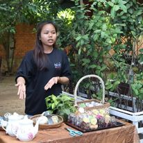
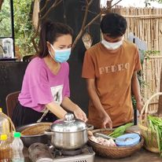

say somthing fkoakf;lak;fka;f;jpkjtpeokfp;

say somthing

say somthing
Students in Phum Asia live and work together in here.
Not only cashew nuts work,
but also they learn many kinds of field like IT,tourism, agri-business, accounting,
restaurant business and so on.
Students in Phum Asia live and work together in here. Not only cashew nuts work, but also they learn many kinds of field like IT, tourism, agri-business, accounting, restaurant business and so on.
For example, some students try to start café, others try to make cookies & cakes and provide them, or learn on-demand lesson from Japanese women entrepreneurs.
For example, some students try to start café, others try to make cookies & cakes and provide them, or learn on-demand lesson from Japanese women entrepreneurs.
say somthing fkoakf;lak;fka;f;jpkjtpeokfp;
say somthing
say somthing
And many mentors, teachers, and supporters are there in Phum Asia.
Periodically, students can learn IT skills from Indonesia, video editing
technique from India, English from Nepal through internet or Japanese language
from staffs in Phum Asia.